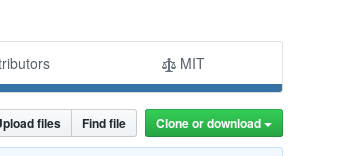
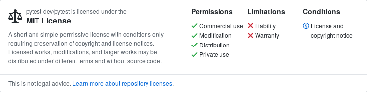

Licensing your code
Ever since the Berne Convention of 1886, copyright is immediately bestowed upon a work the moment it is created, without requiring any registration. This means that any copyrightable work that you create is always completely under your control as far as copyright allows. There are good reasons for this but the result is that if you want to share some code you’ve written with someone then they can’t do much useful with it (such as include it in their product) unless you give them an explicit licence to relax the conditions imposed by copyright.
Since the 1980’s there has been a movement of people who think that all software should be freely sharable and usable by anyone, for any purpose. It is this movement that gave rise to projects such as Linux, Python, Firefox, Wikipedia and VLC. These types of software are referred to as Free Software or Open Source Software. Software is considered Free Software if the software’s users have the following four freedoms philosophy:
- The freedom to run the program as you wish, for any purpose (freedom 0).
- The freedom to study how the program works, and change it so it does your computing as you wish (freedom 1). Access to the source code is a precondition for this.
- The freedom to redistribute copies so you can help others (freedom 2).
- The freedom to distribute copies of your modified versions to others (freedom 3). By doing this you can give the whole community a chance to benefit from your changes. Access to the source code is a precondition for this.
Free Software works within copyright law by providing licences which allow use of the software for any purpose while protecting the author as much as possible. All of the projects mentioned above have a Free Software licence which is what guarantees that they will always remain free, both in terms of cost and what you are allowed to do with them. This contrasts with “closed-source” software such as Microsoft Word which you cannot see the source code for and are not free to share with others and Google Chrome which, while cost-free, is restricted in what you can use it for.
As a researcher funded by public money, I feel it is my moral duty to make any outputs from my work freely available for anyone to make use of. This allows others to build upon what I’ve done, furthering science and it also gives me a route to credit by demonstrating the impact of my work on others.
When to make your code open
Just because you would like to make your source code open, does not mean that you are automatically able to do so. For starters you need the explicit permission of every co-author and copyright holder. In the case of an industrial collaboration they might not want the code to be made public and if they are funding the research they may have put constraints on it. In this case, talk to your collaborators and find out what is possible.
The other situation that arises in research software is the fear that if the code is made public then either their work will be “stolen” by another University or that someone will find an embarrassing bug in it. A potential solution to the former is to hold off the opening of the software until the paper is submitted/published but realistically it’s simply not a problem that really happens. For the second point, it would be much more embarassing to have a paper submitted and then have to retract it when you find a bug yourself later. By opening your code earlier and allowing more contributions you increase the quality of the code and reduce the chance of a bug slipping through.
How to make your code free and open
The steps to making your code open are:
- Choose a licence, agreed by everyone on the project
- Put the licence text in a file alongside your code
- Publish your code somewhere such as GitHub or GitLab.
Choose a licence
There are lots of possible ways to license your code to make it open source, each of which have their own pros and cons. The technicalities of exactly which licence works for you are tricky but to simplify things, you can use a website like choosealicense.com.
The choice generally comes down to how permissive you want to be. Either you put almost no constraints on what the user of your code can do with it (e.g. the MIT licence) or you can require that for example, any changes they make to your code must be made public and open source or even that any software which uses your code must be made available wholly as open source too (e.g. the GNU GPL).
Apply the licence
Most licences only require that there is a single file in your source code directory called something like LICENSE or LICENSE.txt which contains the text of the licence. Some licences advise that you should also put a message at the top of every file but choosealicense.com will inform you of the appropriate approach.
Publish
You don’t need to put your code on a public platform but it’s a really valuable thing to do to allow people to discover it and contribute back changes. When you do upload it to somewhere like GitHub, make sure you also include your LICENSE file. For example, the pytest GitHub page includes their LICENSE file and this automatically creates a link in the top-right labelled “⚖️ MIT”:

which if you click it takes you to the license page which has a header that contain the details of the licence:

University of Bristol advice
If you are at the University of Bristol then Research & Enterprise Development (RED) provide some advice on licensing software along with plenty of good links to other resources. If you have any questions about open-sourcing software you have developed while working at the University then be sure to read that and contact RED. Also, talk to your Research Software Engineering team as they can likely advise on appropriate approaches.